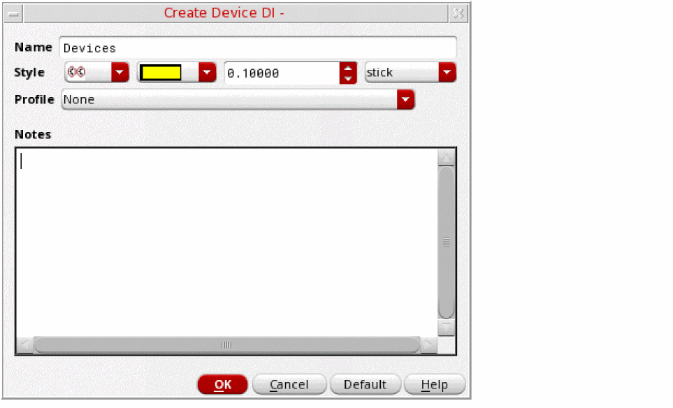
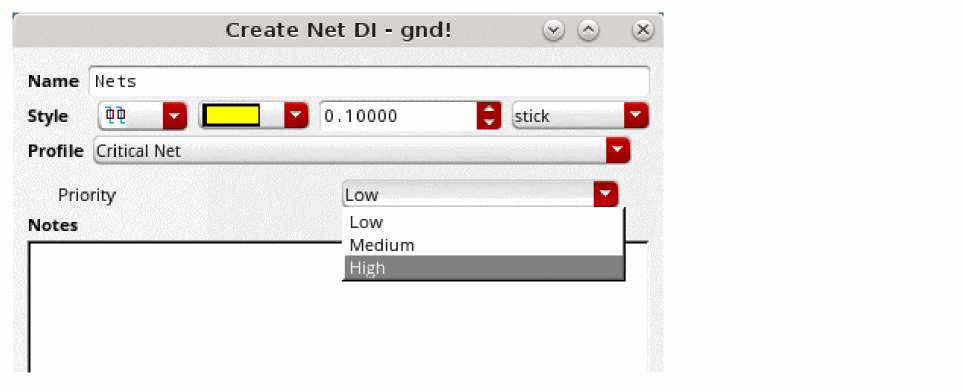
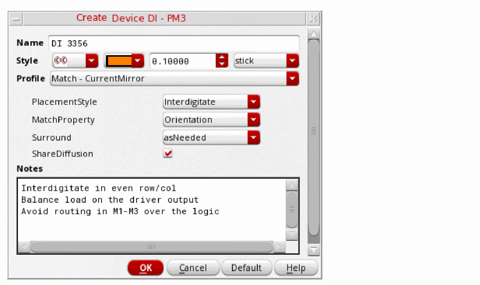
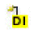

Creating a Design Intent in Schematics XL
To create a design intent in Schematics XL:
-
Right-click one or more objects in the Navigator or on the canvas and choose Design Intent – Create Design Intent.
The type of object selected determines the design intent options available. A context-sensitive submenu is displayed for those objects with multiple design intent categories.
The Create Design Intent Form is displayed.
 - Specify a Name for the design intent.
- Define a Style to identify the design intent annotation and distinguish it from other design intents by selecting a shape, color, font size and font. The selections made identify the design intent annotation on the canvas and are reflected on the associated design intent icons in the Navigator assistant.
-
(Optional) In Schematics XL, define property requirements by selecting a pre-configured Profile. Additional selection options are displayed specific to the profile selected.
In the Profile drop-down list, select Critical Net to filter for critical net design intents. You can customize the priority of the design intent by choosing from Low, Medium, or High. -
In Schematics XL, define property requirements in the Notes section. Add any additional notes for the layout designer about the purpose of the design intent, its properties and to record any special considerations for implementation.
 -
Click OK.
An annotation is displayed on the canvas and in the Navigator, the object icon is displayed with a design intent icon  overlaid and a design intent annotation highlights the object on the canvas.
In Layout XL, the affected objects are immediately displayed with a sync icon as a prompt to Sync Design Intent.
The function
Differences Between Global and Normal Nets
Global nets in schematics differ from normal nets as they make connections across the design hierarchy without using pins and wires. When a Nets design intent is created for a global net, the global net and the new design intent annotation are automatically created on the canvas at the top level of the design in Schematics XL, regardless of where in the hierarchy the global net is located. When the layout view is generated, pins are created in Layout XL for the global nets in the schematic.
Related Topics
Creating a Design Intent in Layout XL
Creating a HighCurrent Design Intent
Creating a HighCurrent Design Intent for Multiple-bit Instances
Creating a MaxVoltageDrop Design Intent
Creating a Cell Design Intent for a Cellview
Creating a Device Design Intent for Half Cells
Return to top